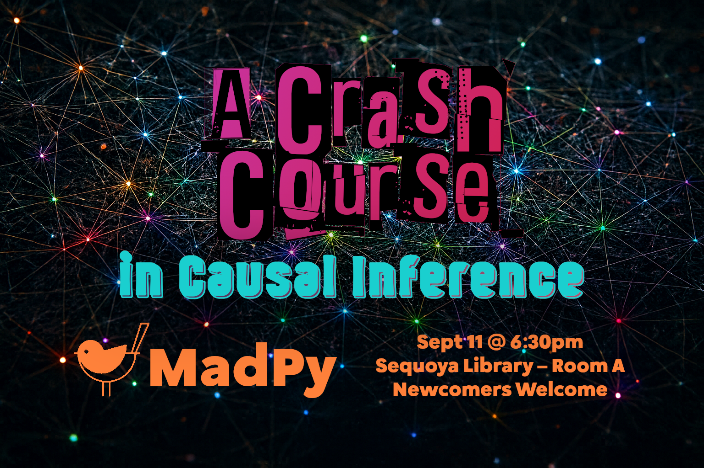

ML engineers have always been interested in prediction problems (predicting who will survive the Titanic, predicting the next word in a sentence), but what about cause and effect? In this talk, I will give you a crash course in causal inference, and try to convince you that prediction models cannot answer some of the more interesting questions we want to ask of our data. If this all sounds too academic, don't worry, I'll have plenty of examples in Python code using some of the popular packages that are out there (e.g., DoWhy).
About the speaker: Pierce Edmiston is a Senior Principal Crafter at 8th Light, where he specializes in platform engineering and data science enablement for clients. He has a PhD in Cognitive Psychology from UW-Madison and he owes everything to Python.